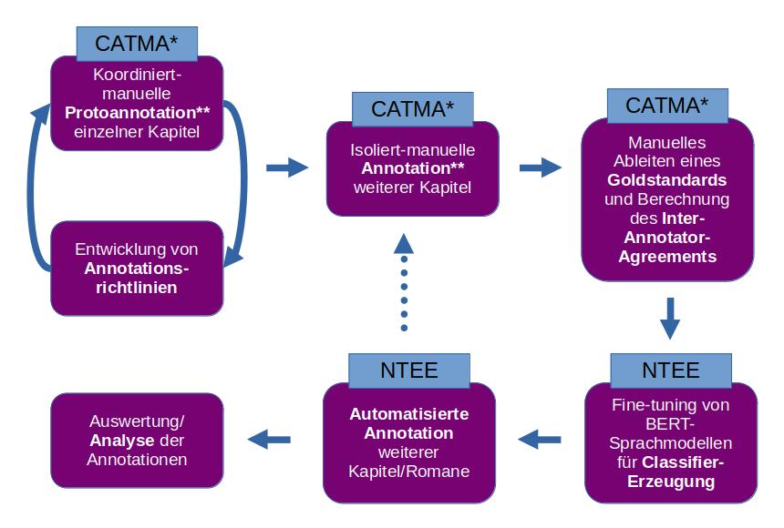
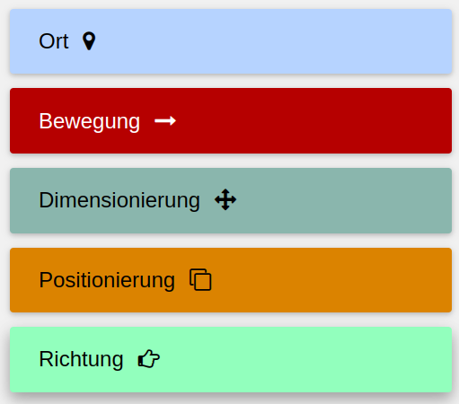
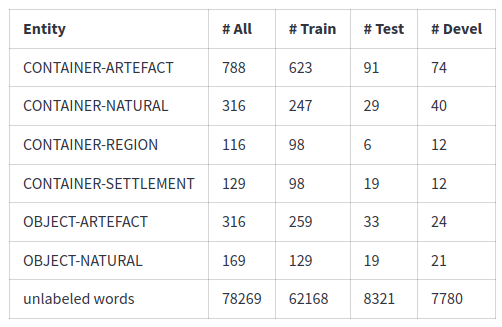
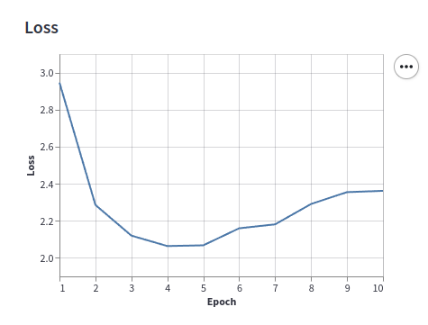

Im Haus und unter dem Himmel:
Artefakte und natürliche Räume im spanischsprachigen Roman des 19. Jahrhunderts
Ulrike Henny-Krahmer (Universität Rostock)
5. Mai 2025
Ringvorlesung "Digital Humanities im Fokus"
Präsentation unter: https://hennyu.github.io/dh-im-fokus_25/

Übersicht
- Computergestützte Zugänge zu narrativem Raum
- Das Projekt CANSpiN
- Analyse natürlicher Räume und Artefakte im Roman des 19. Jahrhunderts
- Forschungsfragen
- Korpora und Methoden
- Analyseergebnisse
- Fazit und nächste Schritte
1. Computergestützte Zugänge zu narrativem Raum
Ausgangspunkte
- Computational Literary Studies (CLS): Teilfeld der DH, computergestützte, häufig quantitative Analyse literarischer Texte, z.B. hinsichtlich Autorschaft, Genre, Epoche, auf der Basis verschiedener Textmerkmale
- Narrative Texte: Konzepte aus der Narratologie – was kann mit Hilfe des Computers untersucht werden?
- Narrativer Raum: konkreter Raum der erzählten Welt, in dem Figuren leben, handeln, sich bewegen
Ebenen der Analyse narrativen Raums
- Raumreferentielle Ausdrücke: sprachliche Ausdrücke, z.B. benannte Entitäten (“Rostock”), allgemeine Ausdrücke (“Esszimmer”, “Kirche”, “Auto”), Deiktika (“hier”, “dort”)
- Narrative Funktionen raumreferentieller Ausdrücke: z.B. Beschreibungen des Settings, handlungsbezogener oder erwähnter Raum
- Die räumliche Struktur der erzählten Welt: die semantische Struktur des erzählten Raums
Beispiel: Referenzen auf Orte (Container)
“A las tres, Roman y Gabriel montaron en un coche en la gran Plaza de Armas. [...] Roman se reclinó en el fondo del carruaje y con la cabeza oculta entre las manos, se dejó avasallar por la influencia de una triste meditación. [...] Pensó en su infancia tan serena, pasada al lado de su madre en un hermoso pueblecito de la costa veracruzana [...]” |
“Um drei Uhr stiegen Roman und Gabriel auf der großen Plaza de Armas in einen Wagen. [...] Roman lehnte sich im hinteren Teil der Kutsche zurück und ließ sich, den Kopf in die Hände gestützt, von einer traurigen Grübelei übermannen. [...] Er dachte an seine so heitere Kindheit, die er an der Seite seiner Mutter in einem schönen kleinen Dorf an der Küste von Veracruz verbracht hatte [...]” |
Juan Díaz Covarrubias, La clase media, Mexiko, 1858
Beispiel: Handlungsbezogene vs. erwähnte Orte
“Um drei Uhr stiegen Roman und Gabriel auf der großen Plaza de Armas in einen Wagen. [...] Roman lehnte sich im hinteren Teil der Kutsche zurück und ließ sich, den Kopf in die Hände gestützt, von einer traurigen Grübelei übermannen. [...] Er dachte an seine so heitere Kindheit, die er an der Seite seiner Mutter in einem schönen kleinen Dorf an der Küste von Veracruz verbracht hatte [...]” |
Juan Díaz Covarrubias, La clase media, Mexiko, 1858
Beispiel: räumliche Struktur der erzählten Welt
“Um drei Uhr stiegen Roman und Gabriel auf der großen Plaza de Armas in einen Wagen. [...] Roman lehnte sich im hinteren Teil der Kutsche zurück und ließ sich, den Kopf in die Hände gestützt, von einer traurigen Grübelei übermannen. [...] Er dachte an seine so heitere Kindheit, die er an der Seite seiner Mutter in einem schönen kleinen Dorf an der Küste von Veracruz verbracht hatte [...]” |
car/carriage Plaza de Armas Mexico City Mexico Veracruz Küste Dorf |

erstellt mit Plotly.JS |
Juan Díaz Covarrubias, La clase media, Mexiko, 1858
Forschungsstand
- Literaturtheorie: ausgearbeitete Konzepte für narrativen Raum (z.B. Dennerlein 2009; Piatti 2008; Ryan 2014; Lotman 1977)
- CLS: bereits einige Ansätze zur Formalisierung räumlicher Konzepte (Mapping von Textmerkmalen, Lernen) (z.B. Viehhauser und Barth 2017; Barth 2022; Viehhauser 2020; Grisot und Herrmann 2023; Schumacher 2023; Soni et al. 2023)
2. Das Projekt CANSpiN
Projekt: Computational Approaches to Narrative Space in 19th- and 20th-Century Novels (CANSpiN)
Ziele:
|
 |
Workflow des Projekts
|

* CATMA 7 und das projektspezifische Python-Package gitma_canspin |
https://catma.de/
 https://github.com/NEISSproject/
https://github.com/NEISSproject/tei_entity_enricher |
Annotationsrichtlinien
Kategorienset CANSpiN.CS1 für die Annotation raumreferentieller Ausdrücke in narrativen Texten:
|
 |
3. Analyse natürlicher Räume und Artefakte im Roman des 19. Jahrhunderts
Forschungsfragen
- Relevanz von narrativem Raum und der Opposition von Stadt vs. Land/Technologie vs. Natur im Roman des 19. Jahrhunderts (z.B. Figuera Marante 2017, Urroz Kanán 2021)
 https://commons.wikimedia.org/wiki/
https://commons.wikimedia.org/wiki/{kind=link}
File:NYC_wideangle_south_from
_Top_of_the_Rock.jpg
 https://commons.wikimedia.org/wiki/
https://commons.wikimedia.org/wiki/{kind=link}
File:Ayrshire_countryside_-_
geograph.org.uk_-_56514.jpg
Forschungsfragen
- Basierend auf den Annotationen der Räume und Orte:
- Wie gut können diese automatisch erkannt werden?
- Was herrscht in Romanen des 19. Jahrhunderts quantitativ vor, natürliche Orte/Räume oder Artefakte?
- Welche Arten von natürlichen Orten/Räumen und Artefakten werden in den Romanen am häufigsten erwähnt?
- Wie variiert ihre Zahl hinsichtlich der Herkunft der Texte (hier: Spanien vs. Lateinamerika)?
- Wie variiert ihre Zahl hinsichtlich der Zeit (= Teilepoche/Publikationsjahr der Romane)?
Korpus
- Korpus von 200 Romanen aus dem langen 19. Jahrhundert (1840–1920) aus Spanien und Lateinamerika
- Quellen für das Korpus: ELTeC-spa (Navarro Colorado 2021) und Conha19 (Henny-Krahmer 2021)
- Eigenschaften: je 100 Romane; Auswahl nach Teilepochen von 20 Jahren balanciert; viele verschiedene Autor:innen
Kategorien für die Annotation
|
Sechs Kategorien:
|
Annotation: Beispiele
| (1) “A las tres, Roman y Gabriel montaron en un cocheCONT-ART en la gran Plaza de ArmasCONT-ART.” | “Um drei Uhr stiegen Roman und Gabriel auf der großen Plaza de ArmasCONT-ART in eine KutscheCONT-ART.” |
| (2) “Pensó en su infancia tan serena, pasada al lado de su madre en un hermoso pueblecitoCONT-SET de la costaCONT-NAT veracruzanaCONT-REG [...]” | “Er dachte an seine so heitere Kindheit, die er an der Seite seiner Mutter in einem schönen kleinen DorfCONT-SET an der KüsteCONT-NAT von VeracruzCONT-REG verbracht hatte [...]” |
(Beispiele aus: (1), (2) Juan Díaz Covarrubias, La clase media, Mexiko, 1858.)
Annotation: Beispiele
| (3) “En un divanOBJ-ART, frente á la chimeneaOBJ-ART, estaba reclinada la marquesa [...]” | “Auf einem DiwanOBJ-ART, vor dem KaminOBJ-ART, lehnte die Markgräfin [...]” |
| (4) “Una noche en que la lunaOBJ-NAT empezaba a menguar, y que algunas nubesOBJ-NAT cubrían el cieloCONT-NAT, estaban los dos sentados en una peñaOBJ-NAT [...]” | “Eines Nachts, als der MondOBJ-NAT abzunehmen begann und einige WolkenOBJ-NAT den HimmelCONT-NAT, bedeckten, saßen die beiden auf einem FelsenOBJ-NAT.” |
(Beispiele aus: (3) Teodoro Guerrero, Anatomía del corazón, Spanien, 1856. (4) Carolina Coronado, Jarilla, Spanien, 1850.)
Annotation
|
 |
Generieren eines Classifiers (= Modelltraining)
|
  |
Analyseergebnisse
|
|
Die häufigsten Artefakte
| Rang | Token | Zahl (absolut) | |
|---|---|---|---|
| 1 | casa | Haus | 17.436 |
| 2 | puerta | Tür | 7.718 |
| 3 | calle | Straße | 4.584 |
| 4 | mesa | Tisch | 3.123 |
| 5 | cuarto | Zimmer | 2.757 |
| 6 | sala | Wohnzimmer/Saal | 1.935 |
| 7 | cama | Bett | 1.906 |
| 8 | lecho | Bett | 1.769 |
| 9 | ventana | Fenster | 1.684 |
| 10 | habitación | Zimmer | 1.612 |
Die häufigsten natürlichen Orte
| Rang | Token | Zahl (absolut) | |
|---|---|---|---|
| 1 | cielo | Himmel | 4.179 |
| 2 | luz | Licht | 4.030 |
| 3 | sol | Sonne | 3.468 |
| 4 | aire | Luft | 2.215 |
| 5 | tierra | Boden/Erde | 2.119 |
| 6 | campo | Feld | 2.069 |
| 7 | mar | Meer | 1.623 |
| 8 | sombra | Schatten | 1.359 |
| 9 | árboles | Bäume | 1.347 |
| 10 | viento | Wind | 1.321 |
Spanien vs. Lateinamerika
- 54 % der raumreferentiellen Ausdrücke kommen in den Romanen aus Spanien vor, 46 % in den Romanen aus Lateinamerika
- differenziert nach Unterarten:
- natürliche Räume/Orte: 54 % (SPA) vs. 46 % (LAT)
- Artefakte: 53 % (SPA) vs. 47 % (LAT)
- Container: 54 % (SPA) vs. 46 % (LAT)
- Objekte: 53 % (SPA) vs. 47 % (LAT)
- Regionen: 54 % (SPA) vs. 46 % (LAT)
- Settlements: 58 % (SPA) vs. 42 % (LAT)
Raumreferentielle Ausdrücke in Teilepochen, insgesamt
- 1840–1859: 24,5 %
- 1860–1879: 24,4 %
- 1880–1900: 28,5 %
- 1900–1920: 22,2 %
Natürliche Räume/Orte in Teilepochen
- 1840–1859: 24,3 %
- 1860–1879: 24,5 %
- 1880–1900: 26,6 %
- 1900–1920: 24,4 %
Artefakte in Teilepochen
- 1840–1859: 22,2 %
- 1860–1879: 24,1 %
- 1880–1900: 30,9 %
- 1900–1920: 22,2 %
4. Fazit und nächste Schritte
- Erkennung räumlicher Entitäten kann noch verbessert werden
(0.75 score vs. 0.96 IAA) - Artefakte, also menschengemachte Objekte und Orte/Räume werden in den Romanen insgesamt häufiger erwähnt als natürliche
- es gibt (leichte) Unterschiede zwischen verschiedenen Teilkorpora (Kontinente/Zeit)
- als Nächstes: Textanalyse auf weitere Korpusmetadaten beziehen (z.B. literarische Strömung, Untergattungen, Autor:innen)
- als Nächstes: narrative Funktionen der räumlichen Referenzen analysieren
Bibliographie
- Barth, Florian. 2022. “Von der literaturwissenschaftlichen Theorie zu maschinellen Erkennung: Operationalisierung von Raumentitäten und Settings.” In: Digitale Verfahren in der Literaturwissenschaft. Ed. by Jan Horstmann and Frank Fischer. Sonderausgabe # 6 von Textpraxis. Digitales Journal für Philologie. https://doi.org/10.17879/64059429732.
- Dennerlein, Katrin (2009): Narratologie des Raumes. Berlin und New York: De Gruyter. https://doi.org/10.1515/9783110219920.
- Gius, Evelyn; Meister, Jan Christoph; Meister, Malte; Petris, Marco; Schumacher, Mareike; Gerstorfer, Dominik (2023): “CATMA 7, Version 7.0.0.” Zenodo. https://doi.org/10.5281/zenodo.1470118.
- Grisot, Giulia; Herrmann, Berenike (2023): “Examining the representation of landscape and its emotional value in German-Swiss fiction between 1840 and 1940.” Journal of Cultural Analytics 8 (1). https://doi.org/10.22148/001c.84475.
- Figuera Marante, Liosdany (2017): “La ciudad en la novela latinoamericana, aproximaciones a su evolución.” Universidad y Sociedad, 9(2), 270-274.
- Henny-Krahmer, Ulrike (ed., 2021): “Corpus de novelas hispanoamericanas del siglo XIX (conha19).” Version 1.0.1. Zenodo. https://doi.org/10.5281/zenodo.4766987.
- Henny-Krahmer, Ulrike; Kellner, Nils; Lemke, Marc (2024): “CANSpiN.CS1 (1.0.0).” Zenodo. https://doi.org/10.5281/zenodo.12706812.
- Lemke, Marc (n.d.): “CANSpiN.CS1 1.1.0 Tutorial.” https://marc-lemke.github.io/canspin.cs1_tutorial/.
- Lotman, Jurij Michailowitsch (1977): Die Struktur literarischer Texte. München: Fink.
- Navarro Colorado, Borja (ed., 2021): “ELTeC-spa.” v0.9.1. Zenodo. https://doi.org/10.5281/zenodo.4662603.
- Piatti, Barbara (2008): Die Geographie Der Literatur. Schauplätze, Handlungsräume, Raumphantasien. Göttingen: Wallstein.
- Ryan, Marie-Laure (2014): “Space.” In The Living Handbook of Narratology, ed. by Peter Hühn, Jan Christoph Meister, John Pier, and Wolf Schmid. Hamburg: Hamburg University. http://www.lhn.uni-hamburg.de/node/55.html.
- Schumacher, Mareike K. (2023): Orte und Räume im Roman. Ein Beitrag zur digitalen Literaturwissenschaft. Berlin und Heidelberg: Springer. https://doi.org/10.1007/978-3-662-66035-5.
- Soni, Sandeep; Sihra, Amanpreet; Evans, Elizabeth; Wilkens, Matthew; Bamman, David (2023): “Grounding Characters and Places in Narrative Text.” In Proceedings of the 61st Annual Meeting of the Association for Computational Linguistics (Volume 1: Long Papers), ed. by Anna Rogers, Jordan Boyd-Graber, and Naoaki Okazaki, 11723–11736. Toronto: Association for Computational Linguistics. https://doi.org/10.18653/v1/2023.acl-long.655.
- Sperfeld, Konrad; Zöllner, Jochen; Lemke, Marc (2023): “NEISS TEI Entity Enricher NTEE, Version 1.1.1.” https://github.com/NEISSproject/tei_entity_enricher.
- Urroz Kanán, Raquel (2021): “El diseño geográfico de la nación en una novela mexicana del siglo XIX. Los bandidos de Río Frío de Manuel Payno.” Revista de Geografía Norte Grande 78: 29-47.
- Viehhauser, Gabriel (2020): “Zur Erkennung von Raum in narrativen Texten. Spatial Frames und Raumsemantik als Modelle für eine digitale Narratologie des Raums.” In Reflektierte Algorithmische Textanalyse, 373–88. De Gruyter. https://doi.org/10.1515/9783110693973-015.
- Viehhauser, Gabriel; Barth, Florian (2017): “Towards a Digital Narratology of Space.” In Digital Humanities 2017. Conference Abstracts, Montréal, Canada, August 8-11, 2017, 643–46. Montréal. https://dh2017.adho.org/abstracts/DH2017-abstracts.pdf.
Vielen Dank!
Präsentation unter: https://hennyu.github.io/dh-im-fokus_25/